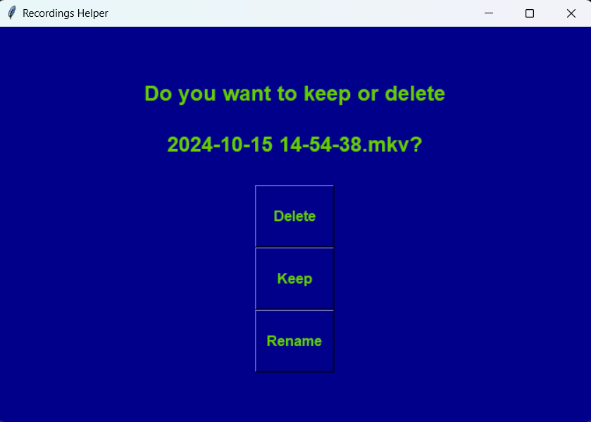

Thomas' Projects
Recording Helper

This program helps with managing a directory. If a '.mkv' file is added it will prompt the options delete, keep, or rename. I created this program to help with managing my folder containing gameplay recording. Instead of opening my file explorer and navigating to the folder then deciphering recordings from each other, I am simply prompted my desired actions. If I don't like the recording or it wasn't significant, I can choose delete. If something significant happened I can rename the file or simply keep it.